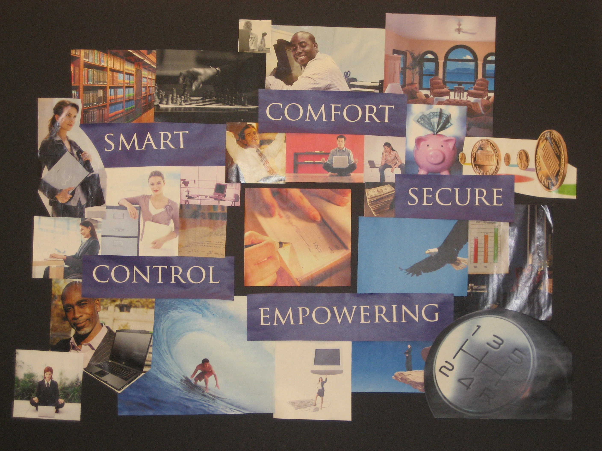

Summary
Summary| Research |
Synthesis |
Design |
Solution |
|
MoodBoard
01
|
|
Persona 02
|
|
Mental Model 03
|
Synthesis |
01 Moodboard |
Based on our initial user research, we captured the positive aspects of the current billpaying experience along with desires for a future system. Users want to feel smart and in control of their money. The system should empower them to manage their spending. And users should feel a sense of security and comfort when dealing with a system that is managing their money. Creating this moodboard together allowed our group to develop a shared understanding of the users of our system.
